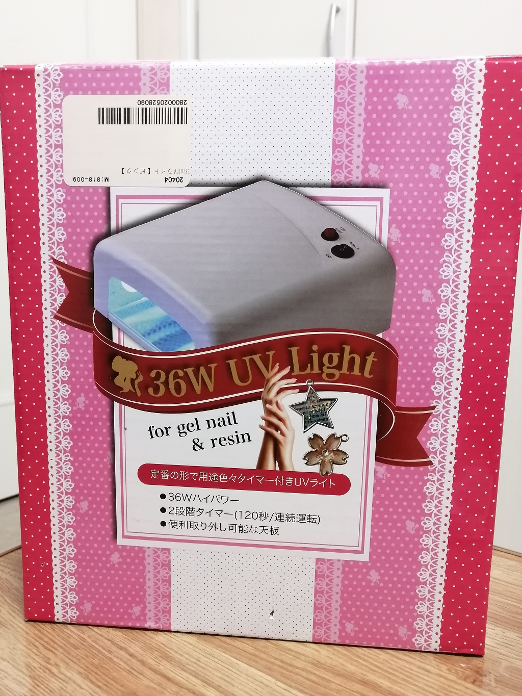

制作について
主にUVレジンを使って、アクセサリーを作っています。
(UVレジン液：紫外線やUVライトを照射すると硬化する樹脂)。
このようなUVライトマシンを使っています。↓
アクセサリー制作には様々なツールやパーツを使います。

試作の時点では、パーツの多くを100円ショップで購入していましたが、プレゼントや販売に向けた制作ではアクセサリーパーツ専門のサイトからネットで購入しています。

ピアス・イヤリングについて
ドライフラワーは、2～3mmや10mmの押し花と、5mmの3Dドライフラワーを使っています。

ビーズを付けるとおしゃれになります。

特に、ホワイトパールはエレガントな印象を与えます。
ワイヤーの花について
ワイヤーには、直径0.25mmのカラーワイヤーを使用しています。
花びら1枚1枚はマニキュアで膜を貼って作ります。
マニキュアが乾いたら、レジン液を塗って硬化させます。
最後に、きれいな花になるように形を整えていきます。
作れば作るほど上手になりますし、新しいアイデアを考えるのも楽しいです。